Stem borer (Diptera: Tephritidae) in Ambrosia
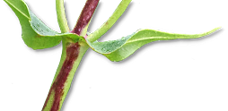
| Record no.: | 0037, 0039 |
|---|---|
| Feeding guild: | Stem borer |
| Taxonomy: | Diptera: Tephritidae: cf. Strauzia perfecta |
| Stages observed: | trace, larva, puparium |
| Distribution observed: | IA |
| Hosts in Ambrosia: | A. artemisiifolia (common ragweed); A. trifida (giant ragweed) |
I found a larva tunneling in the interior of a lower stem of giant ragweed in late September. I did not rear it to adulthood, but the morphology of its anterior and posterior spiracles and the anterior portion of the cephaloskeleton, along with the overall lateral habitus, matched the images of Strauzia perfecta shown in Stoltzfus (1988), and the habitus also matched the images of S. perfecta reared by Hatfield (2023) from the same host and geographic area.
The anterior spiracles of this borer, as present in the aforementioned larva and as shown in the Stoltzfus reference, possess many individual papillae arranged in a spreading fanlike configuration, with the dorsal portion of the fan being about double the length of the ventral portion. Posterior spiracles show 3 slits each, all three of them more or less straight, two of them positioned roughly parallel to one another and separated by a distance approximately equal to their length, the third slit close to touching the middle slit and angled away from it about 30-45 degrees. Spiracles of other Strauzia spp. may be similar, but S. perfecta is the only Strauzia previously recorded from giant ragweed according to Stoltzfus (ibid.).
I also dissected dead stems of giant ragweed in the winter and found them to contain extensive internal tunnel systems with little or no solid frass accumulation and with the culprits absent. The extent of the interior damage to the large, thick stalks of the hostplant, compared to the relatively narrow diameter of the tunnels, clearly indicated that the tunneling was accomplished by several larvae in a single stem. These characteristics match what is reported for S. perfecta by Stoltzfus (ibid.), who writes, "stems [of giant ragweed] two centimeters or larger [in diameter] may have 30 larvae infesting them, completely tunneling the pith and parenchyma tissues of the lower stem" (p. 125). The tunnels I observed also showed ragged walls as would be expected for a dipteran borer.
Additionally, I found a dead larva or incompletely formed puparium, tentatively identified as Tephritidae based in part on the features of the posterior spiracles, in its tunnel in a stem of common ragweed (A. artemisiifolia). As in A. trifida, the tunnel walls were ragged in the classic fashion of dipteran borers. The tunnel extended through virtually the entire length of the stem, from near ground level up to nearly the very tip of the ~50 cm tall plant.

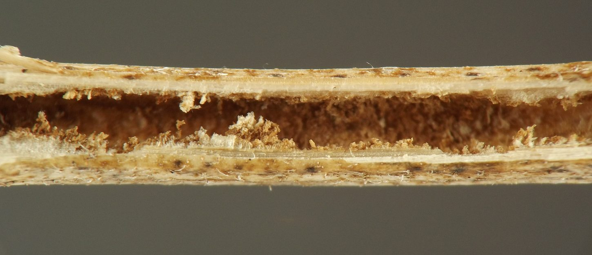

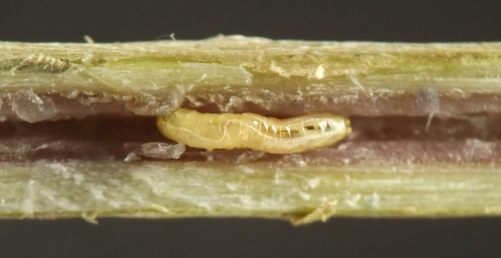

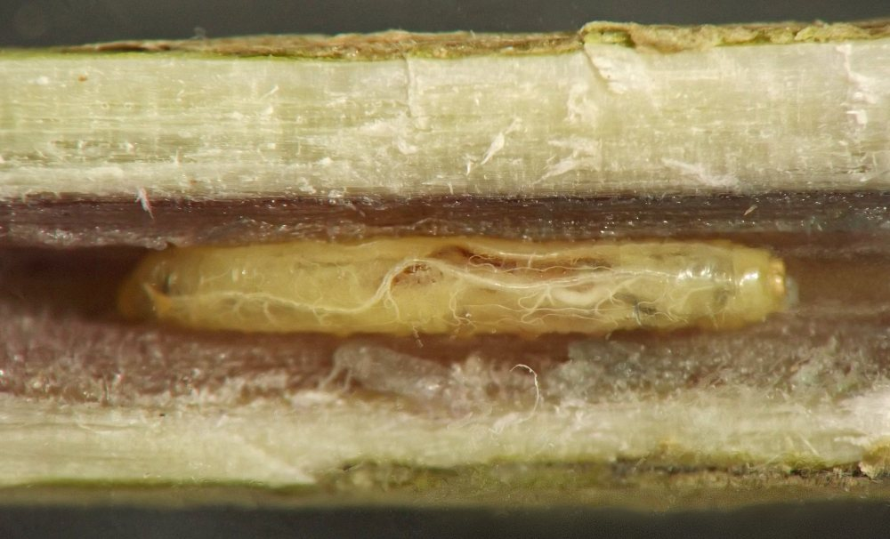

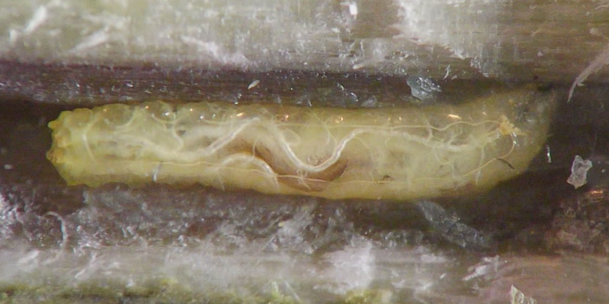

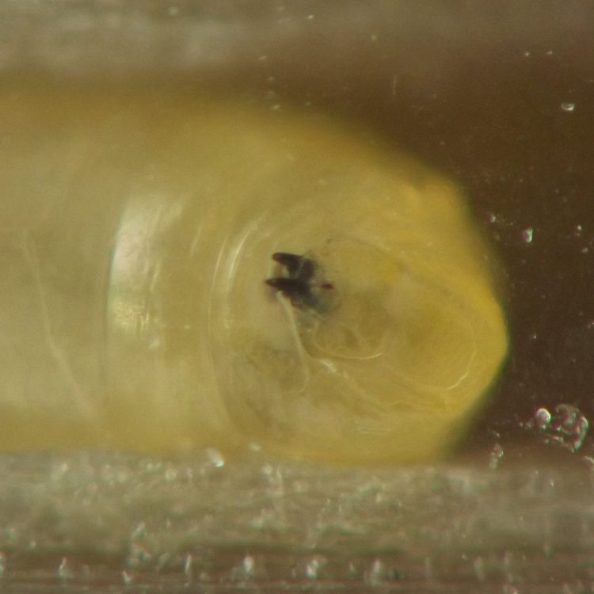

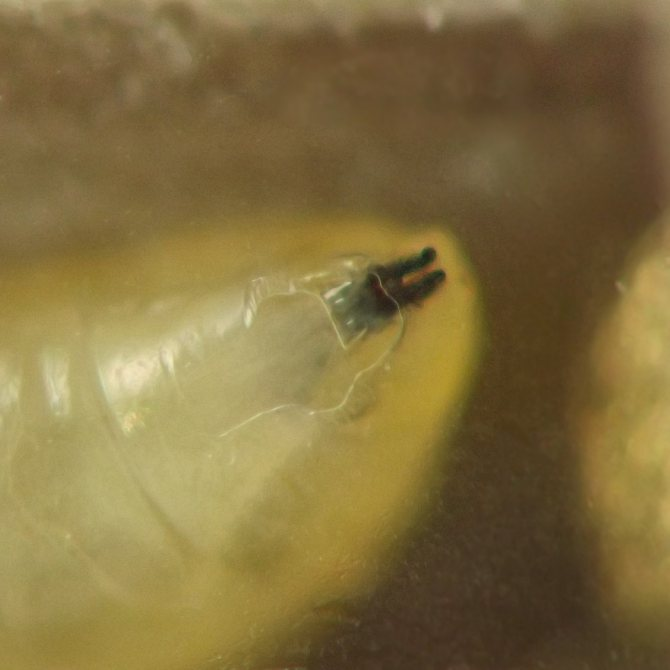

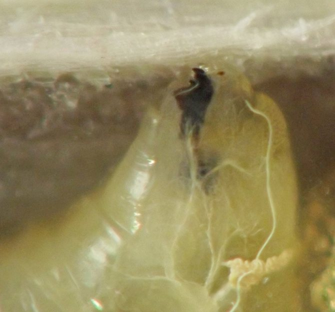

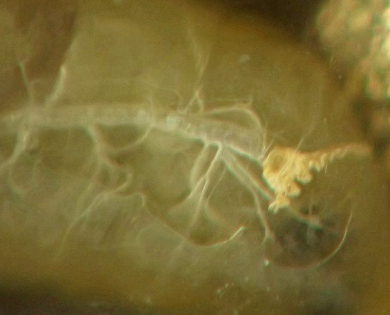

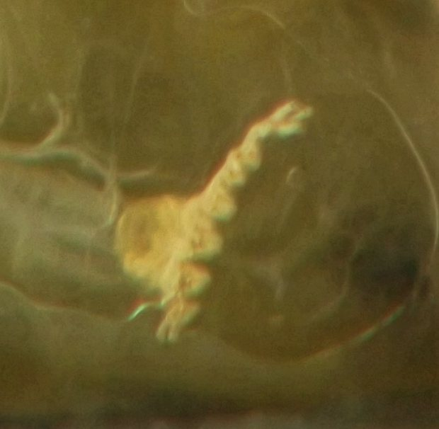

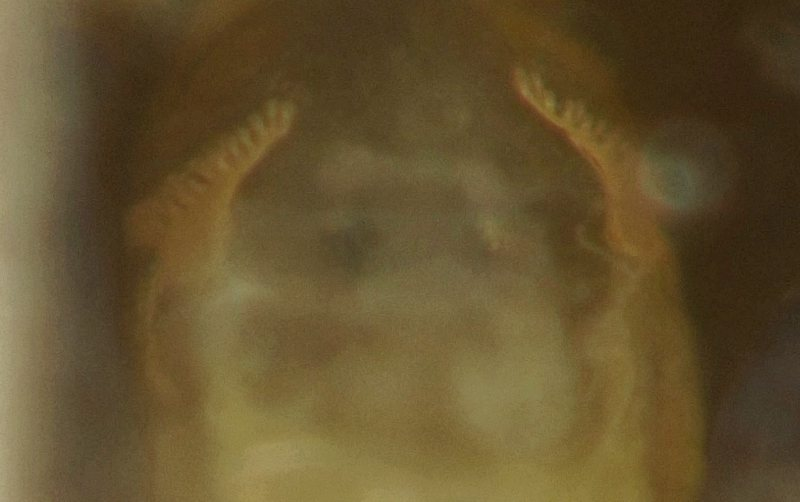

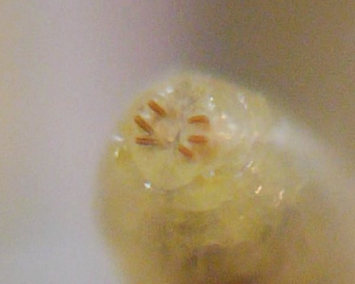

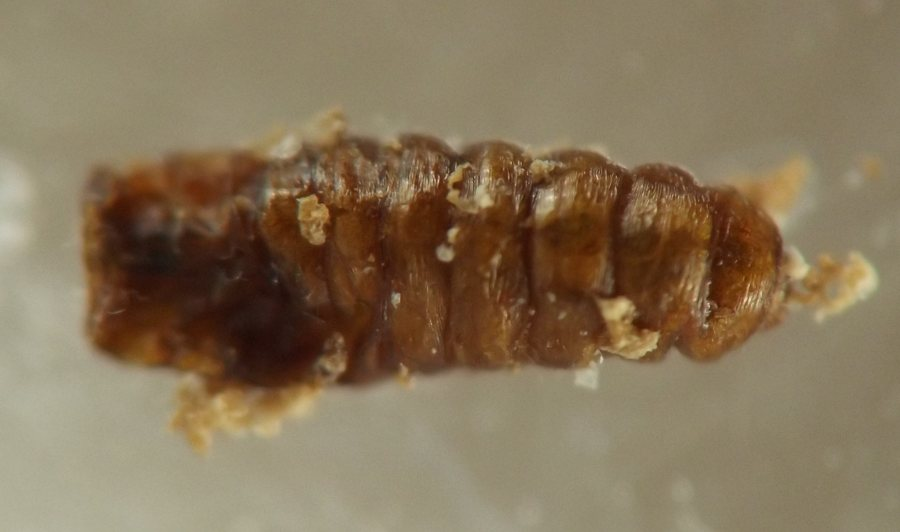
- Hatfield, M.J. 2023. Diptera, 2nd stem of giant ragweed. Contributor post on BugGuide.net. Retrieved March 3, 2024 from https://bugguide.net/node/view/2214600.[return to in-text citation]
- Stoltzfus, W.B. 1988. The taxonomy and biology of Strauzia (Diptera: Tephritidae). Jour. Iowa Acad. Sci. 95(4): 117-126.[return to in-text citation]
Page created: February 10, 2026. Last update: October 16, 2026